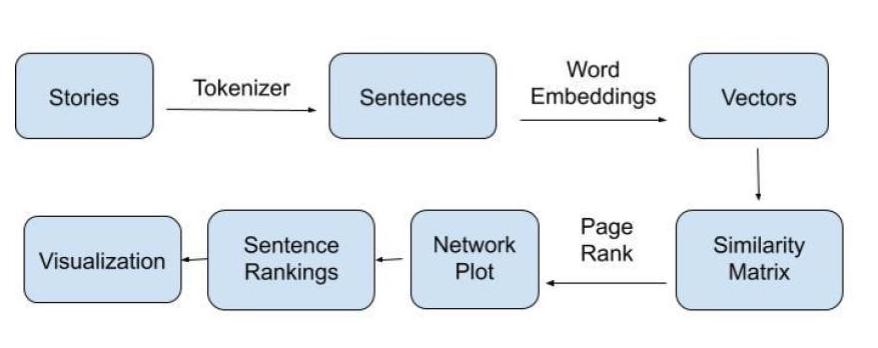

< BACK
PERSONAL NARRATIVE PREDICTOR
Over January of 2020, I worked under
Belen Saldias
in
the Laboratory for Social Machines,
designing a machine learning model for personal stories.
Check out my contributions in
this repository.
Or, take a look at her
final presentation.
